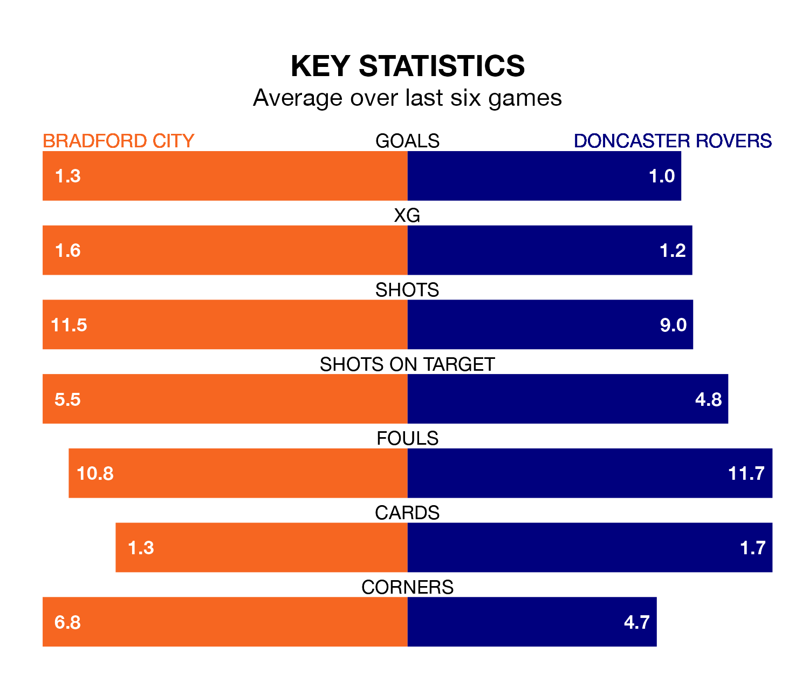

Bradford City face Doncaster Rovers at the University of Bradford Stadium on Saturday looking to secure a first win in six EFL League Two games.
The Bantams have lost two and drawn three matches since they last earned three points – against Doncaster Rovers on December 22.
They face a Doncaster side who have won just one and drawn one over that time.
In the last 10 years, Bradford and Doncaster have played each other on 13 occasions. Bradford won six of them, Doncaster five, and they drew twice.
On average, the Bantams scored 1.2 goals and the Rovers 0.9 in those matches.
Their last meeting was on December 22, when Bradford won 3-1 away.
Doncaster are 20th in the table after 27 games, of which they have won eight and drawn four, earning 28 points.
Bradford are six places ahead of Rovers in 14th, with nine wins and eight draws putting them on 35 points.
With 31 goals in 27 games so far this season, the Rovers are scoring at below the league average rate with 1.1 goals per game. And they are conceding more than average, letting in 47 goals at a rate of 1.7 per game.
City are also below average scorers, with 1.3 goals per game, compared to a league average of 1.5. They have also conceded 1.3 goals per game.
Bradford's last match was on January 13, a 1-1 draw against Colchester United, with Andy Cook getting the goal for the Bantams.
Doncaster lost 1-0 against Newport County last time out, also on January 13.
Updated: 13:09 (UTC), 17/01/24